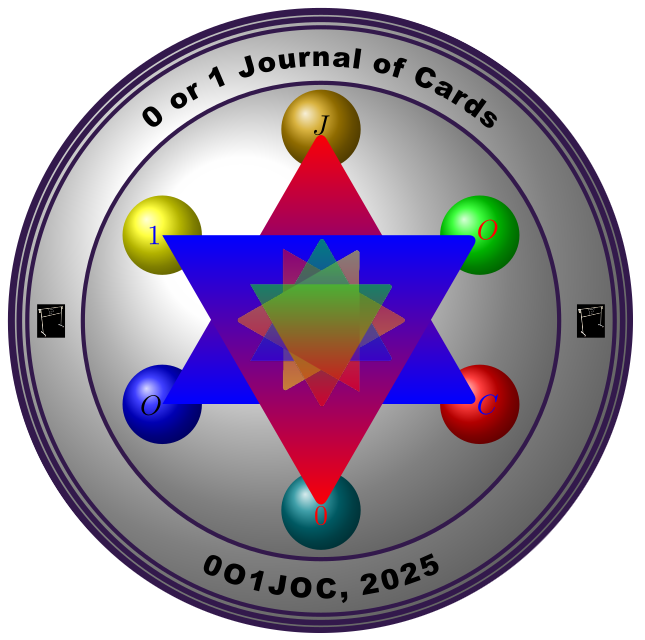

|  | 0 or 1 Journal of Cards for General Knowledge 0 |
This journal is unique in its mission. Unlike traditional academic journals that prioritize groundbreaking discoveries or inventions, we shift the focus toward an equally vital yet often overlooked area: how to effectively and engagingly pass on knowledge to future generations.
In a world where scientific and technological advancements are rapidly expanding, the challenge lies not only in keeping up with these innovations but also in finding innovative ways to teach and inspire the next generation. The traditional methods of teaching, confined to classrooms and rigid structures, are losing their impact. Without creative and engaging approaches, the wealth of knowledge we possess risks being inaccessible to younger minds until it is too late for them to fully grasp and build upon it.
This journal is committed to addressing this challenge by promoting new methods of knowledge dissemination. Specifically, it publishes research and designs focused on creating flashcards for general knowledge. These flashcards aim to make learning interactive, entertaining, and accessible. They will be crafted for people of all ages who enjoy sharing and acquiring knowledge through playful engagement. Overall, 0 or 1 Journal of Cards for General Knowledge 0 publishes flashcards across all disciplines for the purpose of playing 0 or 1 game.
By reimagining learning as a dynamic and enjoyable experience, we hope to bridge the gap between scientific progress and the education of generations to come, ensuring that knowledge is both preserved and celebrated in innovative ways.
The 0 or 1 Journal of Cards for General Knowledge 0 is an innovative and interdisciplinary open-access journal dedicated to publishing high-quality, peer-reviewed flashcards designed for playing the 0 or 1 game. This game serves as an engaging educational tool aimed at fostering learning and knowledge retention across various subject areas. The journal’s primary focus is to provide a creative platform for educators, researchers, and enthusiasts to contribute meaningful and interactive content that supports learning at all levels—from kindergarten to university.
The 0 or 1 Journal of Cards for General Knowledge 0 encourages submissions that align with its mission of promoting education through the use of gamified, card-based learning. Key areas of interest include:
Mathematics: Flashcards for teaching mathematical concepts, formulas, theorems, and problem-solving strategies.
English Language and Literature: Cards focusing on vocabulary building, grammar rules, literary terms, and analysis.
Science (Physics, Chemistry, Biology): Flashcards covering fundamental principles, scientific terms, and experiments.
Social Sciences: Cards that introduce historical events, geographic concepts, and sociological theories.
Technology and Computing: Cards teaching programming syntax, algorithms, or technical terms.
Cards designed for matching synonyms, antonyms, or related concepts, facilitating vocabulary enrichment and conceptual clarity.
Strategies for effectively using flashcards in the 0 or 1 game to enhance memorization, recall, and understanding of subject matter.
Cards tailored for diverse learning stages, from early childhood education (kindergarten) to advanced academic levels (university and research settings).
Cards exploring the connections between disciplines, such as the intersection of mathematics and art or science and philosophy.
The journal seeks to:
Submissions to the 0 or 1 Journal of Cards for General Knowledge 0 may include:
Flashcard Sets: Collections of well-designed cards focused on specific topics or concepts.
Case Studies: Reports on the use of flashcards and the 0 or 1 game in educational settings.
Research Articles: Studies on the effectiveness of gamified learning and flashcards in improving retention and comprehension.
Thematic Decks: Unique card sets integrating themes like storytelling, puzzles, or challenges to enhance learning.
The journal appeals to a broad audience, including: Educators and curriculum developers, researchers and practitioners in education and cognitive sciences, students and self-learners seeking innovative study methods and enthusiasts interested in gamification and creative teaching tools.
The 0 or 1 Journal of Cards for General Knowledge 0 is committed to advancing knowledge through the lens of gamified learning, making education interactive, accessible, and enjoyable for all. By publishing thoughtfully designed flashcards and related content, the journal aspires to transform the way knowledge is shared and retained across the globe.
If you don't follow these guidelines, your paper might be immediately rejected.
We kindly ask that you adhere to the guidelines, which include a commitment to submitting your paper in grammatically correct English. If English is not your first language, we recommend enlisting the help of a native speaker to proofread your work. Additionally, the style guide provided above offers suggestions for professional proofreading services that you may consider.
If you are unable to dedicate the necessary time—typically 2 to 4 hours—after your paper is accepted to thoroughly review the style guide and ensure your submission meets the required standards, we kindly request that you refrain from submitting your work.
We seek original, high-quality papers that have not been published in any other journal. However, please note that publication on websites or e-print servers is permitted. All submissions will undergo a rigorous refereeing process, adhering to the standards expected of reputable journals.
Unlike traditional journals, we do not impose page limits. Authors are encouraged to include as much expository material as necessary to enhance clarity and understanding. Additionally, you are welcome to submit supplementary documents and files, such as computer programs, Maple or Mathematica worksheets, tables, and more. All accompanying materials will be published alongside your paper.
Referees are typically requested to submit their reports within two months. Nonetheless, in reality, it may take longer than expected due to delays at both ends (soliciting a referee and receiving their evaluation) as well as the occasional need to ask multiple individuals before someone agrees to review your paper. If, after several months of attempts, we are unable to find someone willing to read your submission, it is likely that your work may not be suitable for our Journal, and we will inform you accordingly.
The following benefits apply not only to authors who publish papers in this journal but also to those who publish scientific results in traditional journals.
Publishing scientific papers is crucial for career growth, knowledge contribution, and personal development. Despite the challenges, its rewards make it a vital pursuit for academics and researchers.
Role: Oversees the entire editorial process and journal operations. Sets the journal's vision, policies, and editorial standards. Makes the final decision on controversial or complex manuscripts. Represents the journal in the academic community.
Role: Handles specific manuscripts assigned by the EIC. Oversees the peer-review process, including selecting reviewers and evaluating their feedback. Recommends decisions (accept, revise, or reject) to the EIC.
Role: Manages the day-to-day administrative tasks of the journal. Ensures that manuscripts move smoothly through the editorial process. Communicates with authors, reviewers, and editors to maintain timelines. Handles publication logistics, such as proofreading and formatting.
Role: Focuses on a specific subject area or section of the journal (e.g., computational mathematics, theoretical physics). Oversees manuscripts in their area of expertise. Works closely with the EIC and AEs to maintain quality in their section.
Role: Handles special issues or themed sections of the journal. Collaborates with the journal to solicit submissions, organize reviews, and manage publication for the issue.
Role: Provides subject-matter expertise to ensure the quality of the journal. Often invited to review manuscripts and provide strategic input on journal policies. May suggest reviewers or authors for submissions.
Role: Edits manuscripts for grammar, style, and clarity while maintaining the scientific accuracy. Ensures consistency with the journal’s style guide. Prepares manuscripts for final publication.
Role: Coordinates the production process, including typesetting, layout, and formatting. Ensures that articles meet the journal’s design and technical standards. Manages the transition from accepted manuscript to published article.
Role: Checks the technical correctness of mathematical formulas, scientific data, tables, and figures. Ensures that references are accurate and appropriately formatted.
Role: Focuses on soliciting high-quality manuscripts and special issues. Encourages submissions from leading researchers.
Role: Reviews manuscripts for ethical issues, such as plagiarism or conflicts of interest. Ensures compliance with publication ethics guidelines (e.g., COPE).
Peer review is a crucial process used to evaluate the quality of a manuscript before publication. Experts in the relevant field independently review submitted manuscripts to assess their originality, validity, and significance. This feedback helps editors decide whether the manuscript is suitable for publication in the journal. Details about the peer review process and policy are provided below.
The peer review process is essential for maintaining the quality and integrity of scientific publications. By ensuring that only high-quality research is published, it serves the entire scientific community, fostering progress and innovation. While the process may feel daunting at times, especially when it results in a manuscript being rejected, it is important to remember that peer review is not an obstacle but a valuable opportunity for growth. Revisions and feedback are a natural part of the publication process, designed to refine and enhance the quality of your work, ultimately contributing to its impact and significance.
Peer review is a cornerstone of scientific publishing, ensuring the accuracy and credibility of the research being shared. This process relies on the expertise of dedicated reviewers—accomplished professionals who generously volunteer their time to evaluate and enhance submitted manuscripts. Through constructive feedback, they provide authors with invaluable guidance, helping to refine and elevate the quality of their work, all while supporting the advancement of science.
The peer review process is designed to enhance the quality of manuscripts in several key ways:
Beyond providing constructive feedback to authors, peer review serves a critical purpose: it ensures that only high-quality manuscripts are published. This upholds the journal's reputation and maintains the trust of its readers. Publishing too many low-quality papers can harm a journal’s credibility and diminish its readership, underscoring the importance of rigorous peer review.
Your journal manuscript may be rejected for several reasons, including:
Publishing in academic journals is a rigorous process, and rejection is a common challenge. If your manuscript is rejected, you may be given the opportunity to respond to the editors or reviewers with a letter defending your submission. However, it is important to be concise and professional, as most journals only accept one response letter per review stage (editorial review or peer review).
If your response does not lead to acceptance, it is wise to consider submitting your manuscript to a different journal. Carefully reviewing the new journal's scope, guidelines, and expectations can increase your chances of success.
When revising your manuscript and addressing feedback from editors and peer reviewers, follow these steps to ensure a thorough and professional response:
By carefully addressing reviewer comments and adhering to these guidelines, you improve the chances of your manuscript being accepted while building a positive rapport with editors and reviewers.
When responding to reviewer comments, it is crucial to maintain a polite and respectful tone, regardless of whether you agree or disagree with their suggestions. Below are examples illustrating both scenarios:
Reviewer comment:
"In your analysis of the data, you have chosen to use a somewhat obscure fitting function (regression). In my opinion, a simple Gaussian function would have sufficed. Moreover, the results would be more instructive and easier to compare to previous findings."
Author response:
"We appreciate the reviewer’s insightful feedback on our choice of analysis. We agree that our tailored function makes it challenging to fully interpret the data within the framework of prevailing theories. Additionally, we acknowledge that, in its current form, it may be difficult to demonstrate that this measurement represents a significant improvement over previously reported values. To address this, we have re-analyzed the data using a Gaussian fitting function, which we believe enhances both clarity and comparability with earlier studies."
Reviewer comment:
"In your analysis of the data, you have chosen to use a somewhat obscure fitting function (regression). In my opinion, a simple Gaussian function would have sufficed. Moreover, the results would be more instructive and easier to compare to previous findings."
Author response:
"We understand the reviewer’s concern and agree that a simple Gaussian fit would facilitate comparison with results from other studies. However, our tailored function is specifically designed to analyze the data within the framework of the Smith model [Smith et al., 1998], which is central to our interpretation. To clarify this, we have added two sentences to the manuscript (page 3, paragraph 2) explaining the rationale behind using this function and its relevance to Smith's model. We hope this addresses the reviewer’s concern and makes our choice of analysis more transparent."
Key Takeaways for Responding to Reviewers:
Remember, reviewers are experienced researchers, and their feedback often stems from genuine effort to improve your work. If a suggestion seems incorrect, it may indicate a need to improve the clarity or presentation of your manuscript. By addressing their comments respectfully and constructively, you enhance both your manuscript and your professional rapport.
0 or 1 Journal of Cards for General Knowledge 0 (0O1JOCFGK0) operates a single-blind peer-review system, where the reviewers are aware of the names and affiliations of the authors, but the reviewer reports provided to authors are anonymous. The benefit of single-blind peer review is that it is the traditional model of peer review that many reviewers are comfortable with, and it facilitates a dispassionate critique of a manuscript.
Submitted manuscripts will generally be reviewed by two or more experts who will be asked to evaluate whether the manuscript is scientifically sound and coherent, whether it duplicates already published work, and whether or not the manuscript is sufficiently clear for publication. The Editors will reach a decision based on these reports and, where necessary, they will consult with members of the Editorial Board.
Explore our latest publications:
Publishing open-access content involves certain costs to ensure the highest standards of quality and accessibility. To support these efforts, the 0 or 1 Journal of Cards for General Knowledge 0 applies a modest article-processing charge (APC) of 500 USD for each manuscript accepted for publication. However, true to the journal's mission of promoting the 0 or 1 game as both a medium of entertainment and a tool for expanding global knowledge, an exception is made for individuals actively engaged in the 0 or 1 game as jesters or editors or reviewers. For such contributors, the APC is entirely waived, reflecting the journal's dedication to fostering creativity, inclusivity, and the dissemination of knowledge without barriers.
Open access publications are freely and permanently accessible online to anyone with an internet connection. All articles published in 0 or 1 Journal of cards for General Knowledge 0 and books released through this journal are fully open access, governed by Creative Commons licenses. These licenses establish a standard framework that facilitates the reuse of open access (OA) content while ensuring proper attribution. With Creative Commons licenses, authors retain the copyright to their work.
Open access publishing offers several advantages for both authors and readers, making scholarly work more visible, accessible, and impactful:
Open access publications are freely available online to anyone with an internet connection. This unrestricted access ensures maximum visibility and allows more readers, researchers, and institutions worldwide to access, utilize, and build upon the published work. This increased accessibility often translates into greater uptake, citations, and broader dissemination of the research.
Unlike traditional publishing models where copyright is often transferred to the publisher, open access publishing allows authors to retain ownership of their work. By using Creative Commons licenses, authors not only maintain copyright but also define how their work can be reused or shared. As long as the original author is credited, publications can be redistributed and adapted under the terms of the chosen license.
Open access publications adhere to the same rigorous peer review processes as those of subscription-based journals. This ensures that the quality, accuracy, and credibility of the research are maintained, meeting the highest academic standards.
The streamlined online submission and production systems employed in open access publishing facilitate faster reviews, approvals, and final publication. This efficiency allows authors to share their findings with the academic community and the public without unnecessary delays.
Unlike traditional print journals, open access platforms have no space limitations. This allows authors to include extensive supplementary materials such as detailed data sets, high-resolution figures, and even video content, enriching the research and making it more comprehensive.
Open access publishing makes it simple for authors to comply with mandates from funding agencies, academic institutions, and governments that require research to be freely accessible. Articles published in open access journals can be deposited into bibliographic databases and institutional repositories without embargo periods, ensuring immediate compliance.
Open access journals are included in major bibliographic databases and are eligible for impact factor tracking, just like traditional subscription journals. This ensures that authors' works are visible and measurable in terms of their scholarly impact.
By combining free availability, copyright retention, rigorous quality control, and compliance with institutional mandates, open access publishing represents a transformative model for sharing research and advancing global knowledge.
Open access publishing operates under a business model that is fundamentally different from the traditional subscription-based approach. Instead of charging readers a fee to access content, open access journals and books require a publication fee upfront, known as an open access fee. This fee is paid during the publication process and ensures that the content is freely accessible to everyone, everywhere.
The responsibility for covering the open access fee typically falls on the author. However, in most cases, authors do not pay these fees out of pocket. Instead, institutions, funding organizations, or other entities often provide financial support through various mechanisms:
Some institutions establish dedicated open access funds to cover publication costs for their researchers. For example, Harvard University maintains such a fund to support its scholars in publishing their work openly.
Many funding agencies integrate open access fees into their standard research grants. For instance, the National Institutes of Health (NIH) in the United States includes these fees as part of its research funding, ensuring compliance with open access requirements.
Institutions and organizations can also participate in membership programs that cover open access fees. The Max Planck Society, for example, adopts a membership model to pay publication fees on behalf of its researchers.
To further ease the financial burden on individual researchers, 0 or 1 Journal of Cards for General Knowledge 0 offers an Open Access Membership Program, which enables institutions, societies, and funders to support open access publishing more directly. Through this program, participating organizations can subsidize some or all publication costs for their affiliated researchers when publishing with 0 or 1 Journal of Cards for General Knowledge 0.
Additionally, 0 or 1 Journal of Cards provides a free Open Access Funding Support Service to help authors navigate the process of securing financial support for their open access publications. Authors can also check if their institution is part of the Open Access Membership Program and benefit from the associated funding options. You may check zero or one trading share company members in here.
By leveraging these collaborative funding models and support systems, open access publishing makes high-quality, peer-reviewed research accessible to the world, fostering a more inclusive and connected global research community.
Since this journal is new, we are working hard to be indexed in renowned databases such as Scopus, DOAJ, etc.
Email: dagnachew.jenber@aastu.edu.et
Phone: +251-929-101-785